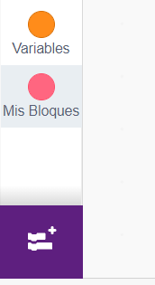
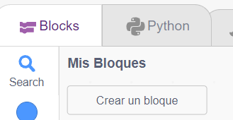
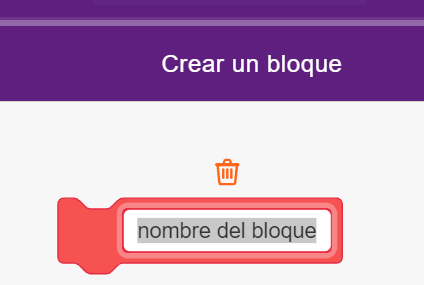
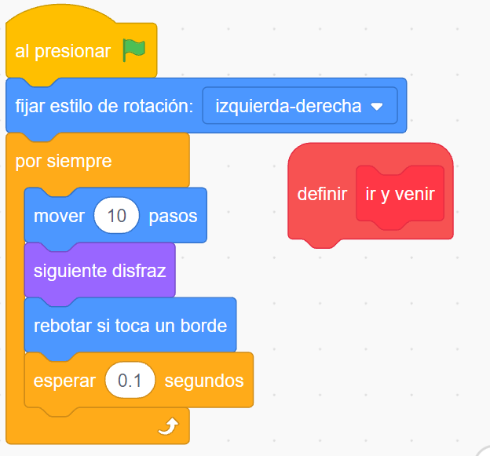
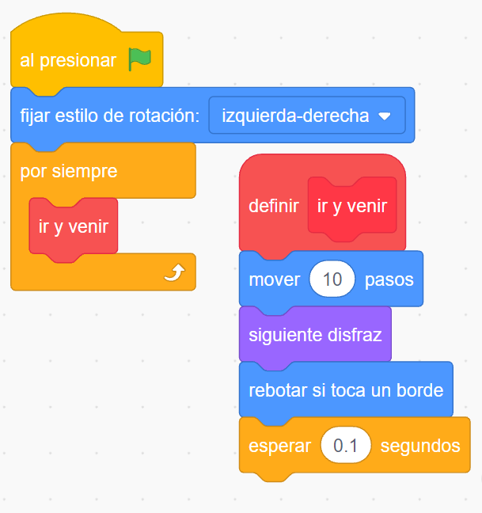

Creando nuestros propios bloques
Podemos crear nuestros propios bloques a los efectos de hacer una programación más clara y ordenada.
|  |
Haciendo un clic en Mis Bloques, podemos acceder al botón para Crear un bloque:  Se abre una nueva ventana que nos permite ponerle el nombre al nuevo bloque creado, por ej. ir y venir  |
|  |
Ya tenemos disponible la cabecera de nuestro nuevo bloque para "pegar" los bloques de programación, que en nuestro caso ya lo tenemos dentro del ciclo por siempre . Lo único que resta es cambiar (arrastrar) los bloques a su nueva posición bajo el bloque cabecera definir ir y venir y en su reemplazo arrastrar el bloque dentro del ciclo ir y venir .  |